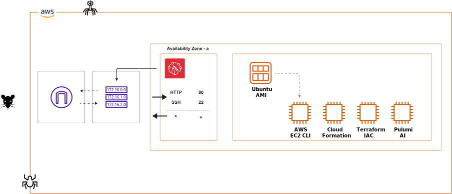

Technical Example
A brief technical demonstration using a workflow orchestration, to align deployment tools (e.g., AWS EC2 CLI, AWS CloudFormation, Terraform, or Pulumi AI) to deploy a simple Web application.
